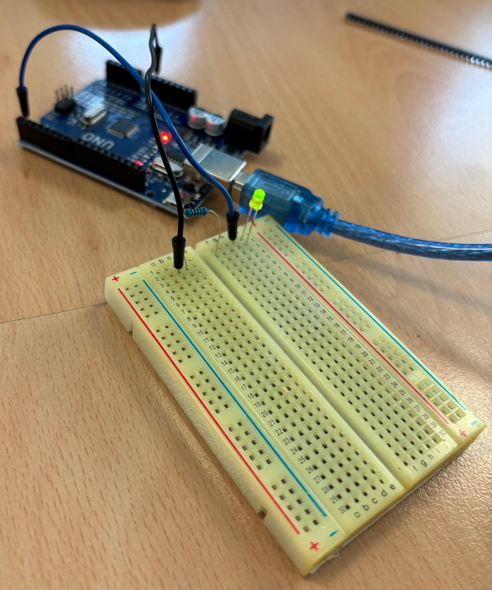
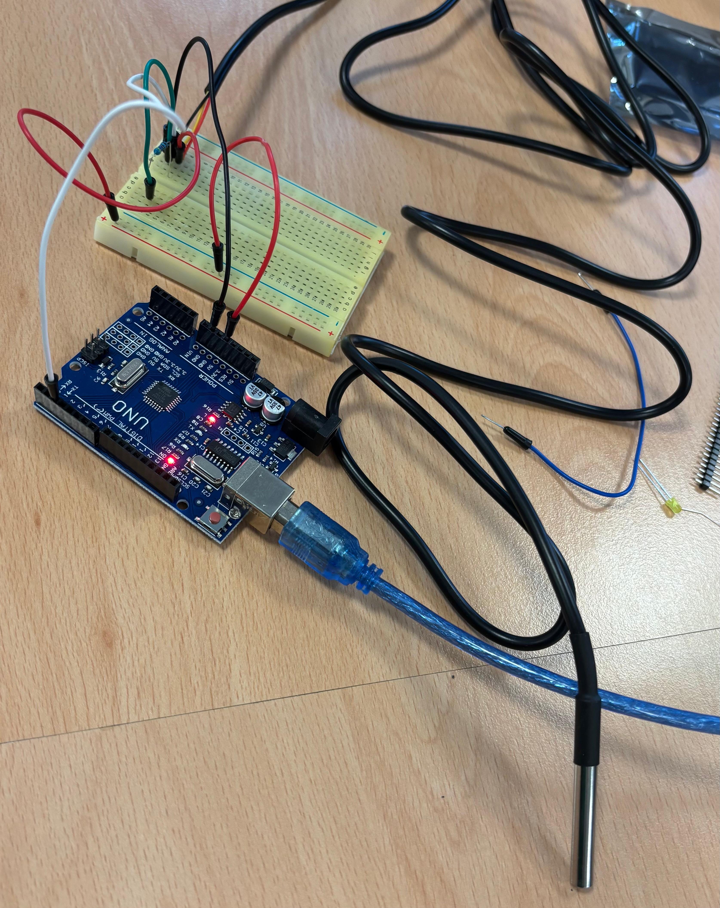
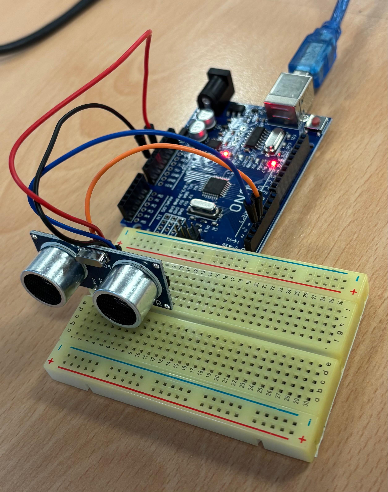
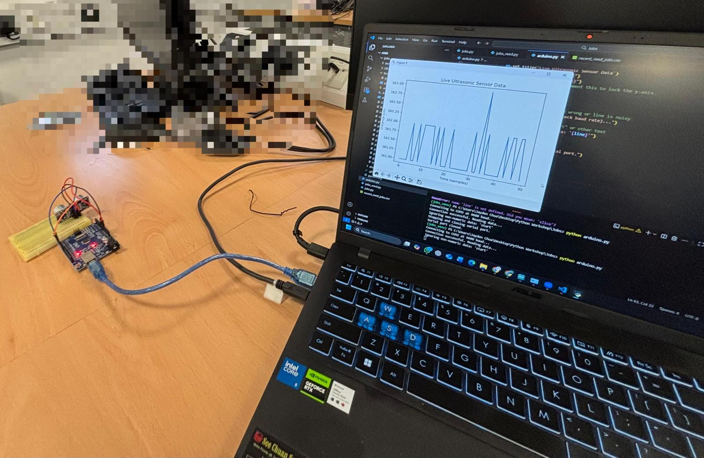

📰 Fake News Detection (Training Machine Learning Models & Create Web Application)
Trained and evaluated multiple machine learning models to identify the best performer for detecting potential misinformation. Using the most accurate model, I built a web application with Streamlit to analyze news content. The web application leverages Natural Language Processing (NLP) and a trained Logistic Regression model to classify text as either "True News" or "Fake News", providing a clear visual breakdown of the prediction probabilities.
🚀 Key Features
- Long Passage Detection: Paste any news article snippet or long-form text (minimum 300 characters) directly into the app for instant analysis.
- URL Link Detection: Paste a link to a news article. The app automatically scrapes the webpage, extracts the main paragraph text, and analyzes the content.
- Keyword Search Detection: Enter a topic or keyword. The app queries News from Google, extracts the articles, and individually evaluates each source, providing a breakdown of their respective truth probabilities.
*Note: The app is hosted on a free server, so it might take some time to load and analyze text.
⚡ Speed Clicker Game
An arcade-style reaction game where players tap glowing shapes to build combos and beat their high scores. Built as a full-stack application with a cross-platform frontend and a Python backend.
☄️ Asteroids Game
A simple, classic Asteroids game built entirely from scratch with Python and the Pygame library.
🎮 Features
- Classic Gameplay: Pilot your ship, avoid asteroids, and shoot to clear the screen.
- Controls: Built-in keyboard support for fluid rotation, thrust, and shooting mechanics.
- State Management: Includes pausing, game over detection, and high-score tracking via a live score display.
🔌 Arduino Distance Tracker & Data Plotting
A hardware engineering project integrating an Arduino microcontroller with an ultrasonic distance sensor. The system actively measures and calculates distance, interfacing seamlessly with Python scripts to plot the resulting sensor data dynamically in real-time.
📸 Project Media



